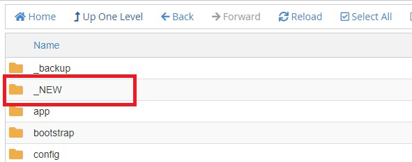

Laravel v10
Guide to upgrade to Laravel 10
Sponzy - Support Creators Content Script
Step by Step
- Requirements:
- PHP >= 8.1
- MySQL 5.7 or Mariadb 10.3.17
- Ctype PHP Extension
- cURL PHP Extension
- DOM PHP Extension
- Fileinfo PHP Extension
- Filter PHP Extension
- Hash PHP Extension
- Mbstring PHP Extension
- OpenSSL PHP Extension
- PCRE PHP Extension
- PDO PHP Extension
- Session PHP Extension
- Tokenizer PHP Extension
- XML PHP Extension
- GD or Imagick
- EXIF
- allow_url_fopen (PHP.INI) is ON
Changelog
- Fixed
- Flutterwwave library missing
- Delete comment on Posts
- Show Alert "Not Results" on Profile user
- NowPayments bugs
- Icons on chat misaligned
- Push Notifications on Notifications Model
- New
- Updated to Laravel 10
- Clear Log File from Panel Admin
- Removed
- PayPal IPN
RECOMMENDATION:
I suggest that you do a fresh installation on your server, to catch possible errors, and then do the update.
- First steps
- Create a folder on your server for example called
_NEW - Upload the files found inside the
Scriptfolder to the folder you just created on your server_NEW

IMPORTANT:
Do not delete the files from your current site, as you will have to copy the files you have modified back after you have upgraded.
IMPORTANT: If you have any questions to update or do not know how to do it, contact me before you start, once you have made the changes it can not be reversed. You must copy the files from your current site to the folder you created with the new version.
Root directory- Copy the file
.envof your current site to the_NEWfolder - Open the file
.envand rename these two variables
INVISIBLE_RECAPTCHA_SITEKEY=YOU_KEY
INVISIBLE_RECAPTCHA_SECRETKEY=YOU_SCRETKEYNOCAPTCHA_SITEKEY=YOU_KEY
NOCAPTCHA_SECRET=YOU_SCRETKEY public- Copy the entire
publicfolder to_NEWfolder

resources- Copy the folder
resources/langof your current site to_NEWfolder
_backup there will move all the files of your current site as backup.

_NEW folder, select all the files, and move them to your root directory.

Note: If after updating you have a 500 error, make sure you have PHP 8.1 or higher, or if you have this error: The server requested authentication method unknown to the client... just change the password of the database user.
If you have your Cron Job set up like this:
/usr/local/bin/ea-php80 /home/username/public_html/artisan schedule:run >> /dev/null 2>&1
You should change
ea-php81
Any problem or doubt send me an email to support@miguelvasquez.net
Do not forget to visit miguelvasquez.net